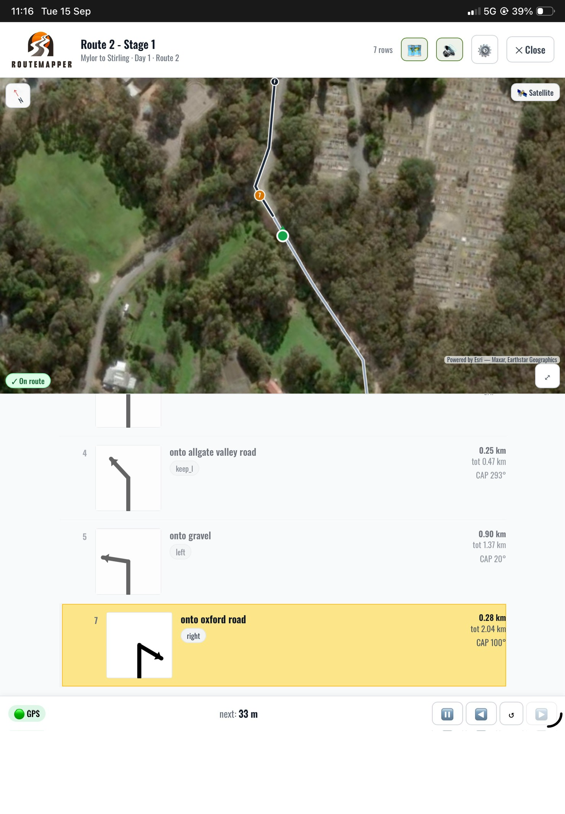

The whole loop
Record → Review → Drive
One tool from the first recon run to the start line — no juggling a GPS, a notebook and a voice recorder that never talk to each other.

Record
Drop a waypoint by tap or push-to-talk voice in about two seconds — “left onto Forbes Road” — while you keep driving. 38 rally-standard icons, auto track recording, live turn detection.

Review
Map and roadbook side by side. Tap a row to fly to it, check every tulip against the real corner geometry, and fix notes and icons in place — before anyone drives it for real.

Drive
Load the stage in Travel Mode and go. Spoken turns, distance to the next instruction, auto-advance from your position, and the offline satellite map — the same data you recorded, now navigating you.